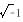

下列數學上所使用的各種記號，請問其由來 江銘輝 五夢網
圖：這些人對數學的記號，有貢獻，上排（由左至右）：笛卡爾、牛頓、萊布尼茲，下排（由左至右）：尤拉、拉格蘭吉、比也特
符號：十與一
解答：
據說，這是具有「計算老大」綽號的德國人維特曼（J. Widmann）在1489年用於表示超過或不足的，後來逐漸變成加法及減法的記號。
又，據說“十”是把拉丁文中表示「及」的et快寫之後變成十的。至於“一”則有人說是在把minus的第一個字母m快寫之後成“一”的。
符號：＝
解答：
這個記號最初出現於黎可特(R．RECORDE，l510~1558年)所著『智慧的磨刀石』(1557年)一書中。黎可特表示把"＝"當做等號使用的理由為「因為沒有比長度相等的平行線更相等的。」因此，這是最初依橫向的長度寫成為“＝”的兩平行線，逐漸變成現在的＝。
符號：×
解答：
這個記號最初出現於1631年出版的奧多烈特（W. Oughtred，1574~1660年)的著作『數學的鑰匙』。
符號：÷
解答：
這個記號出現於1659年出版的蘭(J．H．Rahn，1622~1676)的代數書籍中。可能是從表示"比"的記號":"演變而成的。
符號：＜ 和 ＞
解答：
這個記號出現於1631年出版的哈里奧特(T．Harriot,1560~1621)所著書藉中。
符號：{ a2、a3、a4、…… }
據說，最初使用這個現代指數的記號是笛卡爾(Rene Descartes，1596-1650年)。
符號： √
解答：
出現於1525年出版的路特爾夫(C. Rudolff）的著作『代數』。據說，此記號取自「根(root)」的第一個字母r。
符號：{a－1/2、a－1/3、a－2/3……、a1/2、a1/3、a2/3……}
解答：
據說，這些記號是在瓦里斯(John Wallis，1616~1703年)及牛頓(Isaac Newton，1642~1727年)以後才固定形式的。
虛數符號：i
解答：
據說，最初以i (imaginary ynumber的第一個字母)代替虛數
的是尤拉 (Leonhard Euler 1707~1783年)。
圓周率符號：π
解答：
據說，以π表示圓周率，是仲斯（William Jones,1675~1749年）創始的。自從尤拉、白努利 (Johann Bernoulli 1667~1748年)、黎建德 (A．M．Legendre，1752~1833年)採用之後，此記號才固定了。
符號：f(x)
解答：
在數學上最初引進函數這句話的是萊普尼茲(GW．F．Leibniz，1646~1716年)，但據說最初使用f(x)這個記號的是尤拉。
符號：dx，dy
dx，dy是萊布尼茲最初使用，d是differential的第一個字母，表示微分。
符號：{f’、f’’、……、y’、y’’、……}
解答：
最初使用f’、f’’、……、y’、y’’、……這些記號的是拉格蘭吉（J. L Lagrange 1736~1813年）
符號：∫
解答：
最初使用∫這個記號的是萊布尼茲，這是把表示和(SUM)的這個句子的第一個字母S向上下拉長而成的。
用X、y、z等文字表示未知數
解答：
法國的比也特（F. Viete, 1540~1603年），最初以子音b，c，d，f表示已知的量，而以母音a，e,i, o，u等表示未知的量，但後笛卡爾改以英文字母前面的文字a，b，c，d……表示已知暈，以英文字母後面的文字u，v，w，x，y，z表示未知的量，而這個習慣繼續至現在。